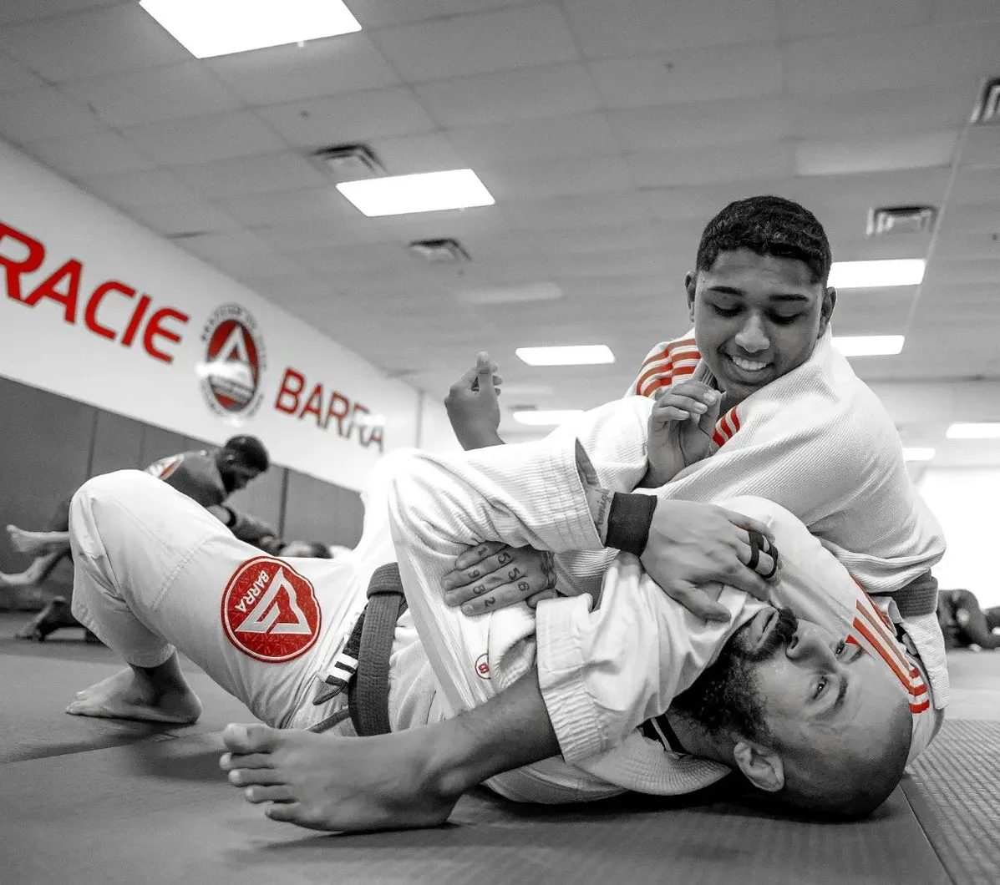
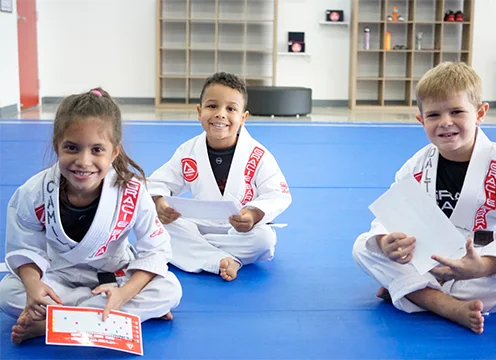

A room on The Way’s field list because a life devoted to practice can become leadership, continuity, and a culture families trust.
Personal recommendationPublic facts verifiedVisit pending
Field list · 02Kissimmee3831 W. Vine Street · Florida
RelationshipCj personal recommendation
VerificationOfficial public sources
ReportingInterview + return visit pending
PhotographyOfficial academy website

Practice in motion · Gracie Barra Kissimmee

Kids program · Confidence and belongingThe room · Kissimmee, Florida
The long view of the practice.
What makes a room last? Technique matters, but so do continuity, teaching, family trust, and the example set by the person at the center. Professor Igor Andrade and Gracie Barra Kissimmee are on this field list because Cj has experienced something there worth returning to and learning from.
The academy’s public materials describe a sixth-degree black belt with more than 35 years in Jiu-Jitsu, alongside programs designed for adults, children, and families. Those facts establish the scaffold; the finished story must be earned in the room.
What we can responsibly say now
Public facts—not a finished review.
Leadership
Professor Igor Andrade
The academy identifies Professor Igor as a sixth-degree black belt with more than 35 years of experience.
Orientation
Tradition and growth
Official materials frame the academy around authentic Jiu-Jitsu tradition, discipline, and development across skill levels.
Programs
Family-centered access
The published offering includes adult Jiu-Jitsu, kids and teens, family-friendly programs, and private instruction.
Source ledger: official Gracie Barra Kissimmee website. Photography reproduced from the official academy website at Cj’s personal recommendation. Accessed August 5, 2026.
What remains to earn
The story comes after the listening.
This page is a transparent field-list preview, not an independent academy review.